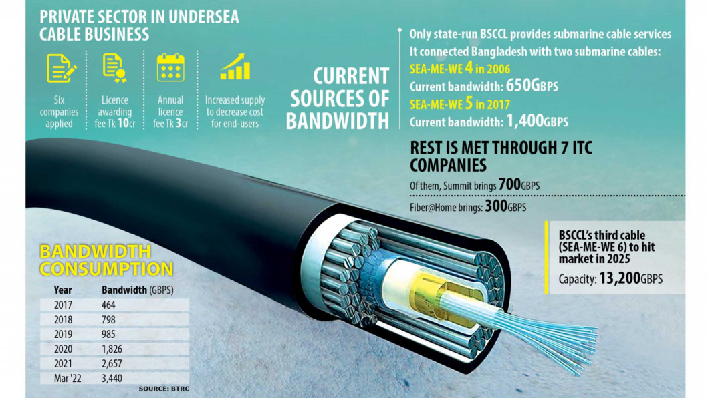

| Home | News | Views | Coronavirus | Sports | Entertainment |
Important Link
Govt to open up submarine cable business to private firms
Aims to meet surging bandwidth demand
Private companies in Bangladesh are set to get licences to establish, maintain and operate submarine cables, in a shift that will break the state monopoly and pave the way for a smooth supply of bandwidth amid a surge in internet use. The state-run Bangladesh Submarine Cable Company Ltd (BSCCL) is the lone entity permitted to connect the country with the rest of the world through undersea cables. But in order to attract private investment to the telecommunication industry to support the growth in bandwidth consumption, the Bangladesh Telecommunication Regulatory Commission (BTRC) has floated a tender to grant licences. Six companies have applied. According to the BTRC, the companies, including Summit Communications, Fiber@Home, and Mango Teleservices applied for the licence as of May 10, the deadline for the submission of the application. The licensee will have to establish its submarine cable systems and offer services within two years from the date of securing the approval. The licence will cost companies Tk 10 crore, and the annual licence fee will be Tk 3 crore. The government will decide how many licences will be issued, according to a BTRC guideline. "Our policy is to create opportunities for the private sector, so we are now allowing private companies to establish submarine cables," Mustafa Jabbar, telecom minister, told The Daily Star yesterday. Private entities have presence in all areas of the telecommunication sector, including telecom, tower, internet service, and transmission network. The minister said the government has initially connected the country through the state-run company since a huge investment was needed and there was uncertainty about the benefit of the investment. "Now we have done the groundwork, and the business case is lucid to private entities." Sumon Ahmed Sabir, chief technology officer at Fiber@Home, said: "We are ready to form a partnership to establish a submarine cable for the local market. This will enhance competition and bring down the price." Abu Saeed Khan, senior policy fellow at Colombo-based think-tank LIRNEasia, said the private companies should have been allowed to establish submarine cables much earlier. "Bangladesh is the only country in South Asia and Southeast Asia where the state-owned monopoly in the submarine cable business is prevailing. There is competition in other countries, including Myanmar, Sri Lanka and the Maldives." Mohammed Shahedul Alam, chief corporate and regulatory officer at Robi, welcomed the government decision and called for awarding the licence to competent companies so that they can arrange the landing of submarine cables within the shortest possible time. The move from the government comes as the use of bandwidth is growing at a break-neck pace in Bangladesh. At the end of December 2008, the use of bandwidth was only 7.5 gigabytes per second (Gbps), serving 7.7 lakh people, according to the telecom minister. It was 600 Gbps in 2016. The bandwidth consumption witnessed a remarkable rise during the coronavirus pandemic as people turned to internet to work, study and find entertainment at home. The bandwidth use surged to 3,440 Gbps in March this year, up from 1,000 Gbps before the pandemic, according to the BTRC. About 650 Gbps is supplied by BSCCL through the South East Asia–Middle East–Western Europe 4 (SEA-ME-WE 4) consortium, the first undersea cable with which Bangladesh was connected with in 2006. BSCCL supplies another 1,400 Gbps through the country's second submarine cable, SEA-ME-WE 5. The connection was established in 2017. The rest comes from India through seven international terrestrial cable service providers, with Summit Communications bringing in 700 Gbps and Fiber@home 300 Gbps.
Notice
contact Us
sms-subscription
© 2022 thedailystar.net Powered by: RSI LAB|
Copyright: Any unauthorized use or reproduction of The Daily Star content for commercial purposes is strictly prohibited and constitutes copyright infringement liable to legal action.